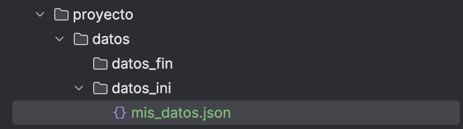

Ficheros y directorios
2. Gestión de ficheros y directorios
La gestión de ficheros y directorios se realiza a través de Path y Files.
- Path: Representa una ruta en el sistema de ficheros (ej.
/home/usuario/foto.pngoC:\usuarios\docs\informe.txt). Un objeto Path es una dirección y no significa que el fichero o directorio exista.
Métodos principales de Path
| Método | Descripción |
|---|---|
Path.of(String) |
Crea un objeto Path a partir de un String de ruta (Java 11+). Por debajo llama a Paths.get() que es el método original de la clase Paths (Java 7+). |
toString() |
Devuelve la ruta como un String (se llama por defecto desde println). |
toAbsolutePath() |
Devuelve la ruta absoluta del Path. |
fileName() |
Devuelve el nombre del fichero o directorio final de la ruta. |
Ejemplo 1
import java.nio.file.Path
fun main() {
// Path relativo al directorio del proyecto
val rutaRelativa: Path = Path.of("documentos", "ejemplo.txt")
// Path absoluto en Windows
val rutaAbsolutaWin: Path = Path.of("C:", "Users", "Pol", "Documentos")
// Path absoluto en Linux/macOS
val rutaAbsolutaNix: Path = Path.of("/home/pol/documentos")
println ("Ruta relativa: " + rutaRelativa)
println ("Ruta absoluta: " + rutaRelativa.toAbsolutePath())
println ("Ruta absoluta: " + rutaAbsolutaWin)
println ("Ruta absoluta: " + rutaAbsolutaNix)
}
Ruta relativa: documentos\ejemplo.txt
Ruta absoluta: F:\kot\1-ficheros\documentos\ejemplo.txt
Ruta absoluta: C:\Users\Pol\Documentos
Ruta absoluta: \home\pol\documentos
- Files: Es una clase de utilidad con las acciones (borrar, copiar, mover, leer, etc) que podemos realizar sobre las rutas (
Path).
Métodos principales de Files
| Método | Descripción |
|---|---|
exists(), isDirectory(), isRegularFile(), isReadable() |
Verificar de existencia y accesibilidad. |
list(), walk() |
Listar contenido de un directorio. |
readAttributes() |
Obtener atributos (tamaño, fecha, etc.). |
createDirectory() |
Crear un directorio: Solo crea el directorio y espera que todo el "camino" hasta él ya exista. |
createDirectories |
Crea un directorio y también los directorios padre si no existen. Es la forma más segura. |
createFile() |
Crear un fichero. |
delete() |
Borrar un fichero o directorio (lanza una excepción si el borrado falla). Lanza la excepción NoSuchFileException si el fichero o directorio no existe. Es más seguro deleteIfExists(). |
move(origen, destino) |
Mover o renombrar un fichero o directorio. |
copy(origen, destino) |
Copiar un fichero o directorio. Si el destino ya existe se puede sobreescribir utilizando copy(Path, Path, REPLACE_EXISTING). Si se copia un directorio no se copiará su contenido, el nuevo directorio estará vacío. |
Ejemplo 2
El siguiente ejemplo es un organizador de ficheros. Imagina una carpeta de "multimedia" donde todo está desordenado. El programa organizará los ficheros en subcarpetas según su extensión (.pdf, .jpg, .mp3, etc).
import java.nio.file.Files
import java.nio.file.Path
import java.nio.file.StandardCopyOption
import kotlin.io.path.extension // Extensión de Kotlin para obtener la extensión
fun main() {
// 1. Ruta de la carpeta a organizar
val carpeta = Path.of("multimedia")
println ("--- Iniciando la organización de la carpeta: " + carpeta + "---")
try {
// 2. Recorrer la carpeta desordenada y utilizar .use para asegurar que los recursos del sistema se cierren correctamente
Files.list(carpeta).use { streamDePaths ->
streamDePaths.forEach { pathFichero ->
// 3. Solo interesan los ficheros, ignorar subcarpetas
if (Files.isRegularFile(pathFichero)) {
// 4. Obteners la extensión del fichero (ej: "pdf", "jpg")
val extension = pathFichero.extension.lowercase()
if (extension.isBlank()) {
println ("-> Ignorando: " + pathFichero.fileName)
return@forEach // Salta a la siguiente iteración del bucle
}
// 5. Crear la ruta del directorio de destino
val carpetaDestino = carpeta.resolve(extension)
// 6. Crear el directorio de destino si no existe
if (Files.notExists(carpetaDestino)) {
println ("-> Creando nueva carpeta " + extension)
Files.createDirectories(carpetaDestino)
}
// 7. Mover el fichero a su nueva carpeta
val pathDestino = carpetaDestino.resolve(pathFichero.fileName)
Files.move(pathFichero, pathDestino, StandardCopyOption.REPLACE_EXISTING)
println ("-> Moviendo " + pathFichero.fileName + " a " + extension)
}
}
}
println ("\n--- ¡Organización completada con éxito! ---")
} catch (e: Exception) {
println ("\n--- Ocurrió un error durante la organización ---")
e.printStackTrace()
}
}
multimedia y guarda diferentes archivos (pdf, jpg, txt, etc.). Ejecuta el ejemplo anterior y comprueba que la salida es parecida a la siguiente.
--- Iniciando la organización de la carpeta: multimedia---
-> Creando nueva carpeta jpg
-> Moviendo 20191106_071048.jpg a jpg
-> Moviendo 20191101_071830.jpg a jpg
-> Creando nueva carpeta txt
-> Moviendo libros.txt a txt
-> Moviendo peliculas.txt a txt
-> Creando nueva carpeta pdf
-> Moviendo lorem-ipsum-2.pdf a pdf
-> Moviendo lorem-ipsum-1.pdf a pdf
-> Creando nueva carpeta mp3
-> Moviendo dark-cinematic-atmosphere.mp3 a mp3
-> Moviendo pad-harmonious-and-soothing-voice-like-background.mp3 a mp3
--- ¡Organización completada con éxito! ---
En el ejemplo anterior hemos recorrido un directorio para organizar los ficheros que contenía. Recorrer un directorio para "mirar" su contenido es útil en muchas situaciones y hay varias formas de hacerlo. A continuación veremos algunas:
Files.list(path): Es la utilizada en el ejemplo anterior. Lista únicamente el contenido de un directorio sin acceder a las subcarpetas. Será útil cuando solamente sea necesario acceder al contenido directo de una carpeta, por ejemplo para organizar ficheros en un directorio, mostrar el contenido de la carpeta actual o buscar un fichero específico solo en este nivel.- Ventajas:
- Rápido y eficiente al no ser recursivo.
- Ofrece un control preciso, operando solo en el primer nivel del directorio.
- Devuelve un
Streamde Java que permite usar operadores funcionales (filter,map, etc.) de forma segura con.use.
- Inconvenientes:
- No explora subdirectorios.
- Para recorrer un árbol completo, se necesita implementar lógica recursiva manualmente.
- Ventajas:
Files.walk(path): Recorre un directorio y todo su contenido recursivamente. Entra en cada subcarpeta, y en sus subcarpetas hasta el final. Será útil para operar sobre un directorio y todo lo que contiene, sin importar la profundidad, por ejemplo para buscar un fichero por nombre en cualquier subcarpeta, eliminar todos los ficheros temporales de un proyecto o contar todos los ficheros .kt de un repositorio.- Ventajas:
- Recorre árboles de directorios completos (recursivo) de forma muy sencilla.
- Extremadamente potente para búsquedas profundas o aplicar operaciones a todos los elementos anidados.
- También devuelve un
Stream, permitiendo un filtrado y procesamiento muy expresivo.
- Inconvenientes:
- Puede ser lento y consumir más memoria en directorios con miles de ficheros.
- Es una herramienta excesiva ('overkill') para tareas que solo requieren acceder al nivel actual.
- Ventajas:
Files.newDirectoryStream(path): Es similar aFiles.list(), listando solo el contenido inmediato. La diferencia es que no devuelve unStreamde Java 8 (que permite usar.filter,.forEach, etc.), sino unDirectoryStream, que es una versión más antigua que se usa con bucles for. Es menos común en código Kotlin moderno, pero es bueno reconocerlo para poder entender en proyectos antiguos (legacy). Para cualquier tarea nueva,Files.list()yFiles.walk()son superiores en seguridad y expresividad.- Ventajas:
- Utiliza un bucle
for-eachtradicional, que puede resultar familiar.
- Utiliza un bucle
- Inconvenientes:
- ¡PELIGRO! Requiere cerrar el recurso manualmente (
.close()). Si se olvida, provoca fugas de recursos (resource leaks). - Es menos expresivo que los Streams. No se pueden encadenar operadores funcionales fácilmente.
- Considerado obsoleto en código Kotlin idiomático, que prefiere
Files.list().use{...}.
- ¡PELIGRO! Requiere cerrar el recurso manualmente (
- Ventajas:
Ejemplo 3
Queremos crear un informe de toda la estructura de la carpeta resultante del ejemplo anterior. Por tanto necesitamos entrar en las nuevas carpetas (pdf, jpg, txt) y ver qué ficheros hay dentro de cada una. Para ello se utiliza Files.walk() que calcula la profundidad, recorre la jerarquía de carpetas y muestra cada elemento indicando si es un directorio o un fichero.
import java.nio.file.Files
import java.nio.file.Path
fun main() {
val carpetaPrincipal = Path.of("multimedia")
println ("--- Mostrando la estructura final con Files.walk() ---")
try {
Files.walk(carpetaPrincipal).use { stream ->
// Ordenar el stream para una visualización más predecible
stream.sorted().forEach { path ->
// Calcular profundidad para la indentación
// Restamos el número de componentes de la ruta base para que el directorio principal no tenga indentación
val profundidad = path.nameCount - carpetaPrincipal.nameCount
val indentacion = "\t".repeat(profundidad)
// Determinamos si es directorio o fichero para el prefijo
val prefijo = if (Files.isDirectory(path)) "[DIR]" else "[FILE]"
// No imprimimos la propia carpeta raíz, solo su contenido
if (profundidad > 0) {
println ("$indentacion$prefijo ${path.fileName}")
}
}
}
} catch (e: Exception) {
println ("\n--- Ocurrió un error durante el recorrido ---")
e.printStackTrace()
}
}
--- Mostrando la estructura final con Files.walk() ---
[DIR] jpg
[FILE] 20191101_071830.jpg
[FILE] 20191106_071048.jpg
[DIR] mp3
[FILE] dark-cinematic-atmosphere.mp3
[FILE] pad-harmonious-and-soothing-voice-like-background.mp3
[DIR] mp4
[FILE] 283533_small.mp4
[FILE] 293968_small.mp4
[DIR] pdf
[FILE] lorem-ipsum-1.pdf
[FILE] lorem-ipsum-2.pdf
[DIR] txt
[FILE] libros.txt
[FILE] peliculas.txt
🎯 Práctica 2: Directorios y comprobaciones
Prepara la estructura de tu proyecto. Crea la ruta proyecto/datos. Basándote en los ejemplos anteriores, desarrolla un programa en tu proyecto haga lo siguiente:
- Defina dos rutas: una para una carpeta llamada
datos_iniy otra para una carpeta llamadadatos_fin(ambas dentro de la carpetaproyecto/datosde tu proyecto). - Comprueba los directorios: Si las carpetas no existen las deberá crear utilizando
Files.createDirectories. - Añade ficheros: Añade (manualmente y vacío) el fichero
mis_datos.jsondentro de la carpetadatos_ini. - Comprueba ficheros: Después de la comprobación de la existencia del fichero de datos dentro de la carpeta
datos_ini(mis_datos.json) imprimirá un mensaje por consola mostrando la estrctura de directorios y ficheros.
La salida de tu programa debe ser parecida a esta, la primera vez que se ejecuta:
CREACIÓN DE RUTAS PROYECTO
Creando rutas...
Creación de ruta para DATOS_INI
Creación de ruta para DATOS_FIN
MOSTRANDO ESTRUCTURA DE DIRECTORIOS Y FICHEROS
[DIR] datos
[DIR] datos_fin
[DIR] datos_ini
Y la segunda vez que se ejecuta, tras añadir el fichero mis_datos.json:
CREACIÓN DE RUTAS PROYECTO
Creando rutas...
MOSTRANDO ESTRUCTURA DE DIRECTORIOS Y FICHEROS
[DIR] datos
[DIR] datos_fin
[DIR] datos_ini
[FILE] mis_datos.json
La estructura en tu proyecto debe ser parecida a esta:
